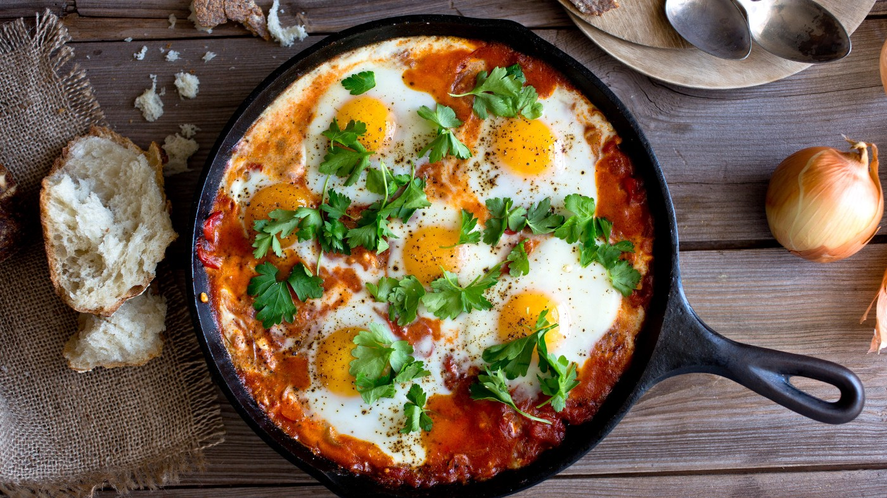

Ojja Tunisian Style

Ingredients:
- 2-4 tbs olive or vegetable oil
- ½ cup yellow onion chopped
- 3 garlic cloves chopped
- ½ cup green onions chopped
- 2 roma tomatoes chopped
- 1 tbs tomato paste
- 1 chilli pepper chopped
- ½ cup parsley, coarsely chopped
- 1 tsp salt
- 2 tbs harissa
- 1 tsp paprika
- 2-3 dried red chilli peppers
- 5 eggs
- ½ cup water
Instructions:
- Cover the bottom of a frying pan or saute pan with oil.
- Add garlic and onions and saute until fragrant and starting to soften.
- Add green onions, tomatoes, chilli peppers, parsley, salt, harissa, dried chillies, and paprika and continue to saute on medium heat until softened.
- Add half a cup of water and mix well. At this point the mixture should be a little thick but still a bit liquidy.
- Crack your eggs on top of the mixture, far enough apart that they don't touch each other. Season each egg with salt and black pepper. Cover and let cookuntil whites are set and the yolk is slightly runny (or to desired doneness) and remove from heat.
- Leave plain or top with some tuna or sardines. Garnish with parsley, green onions, and a small drizzle of olive oil.
- Serve with baguette or any type of bread.